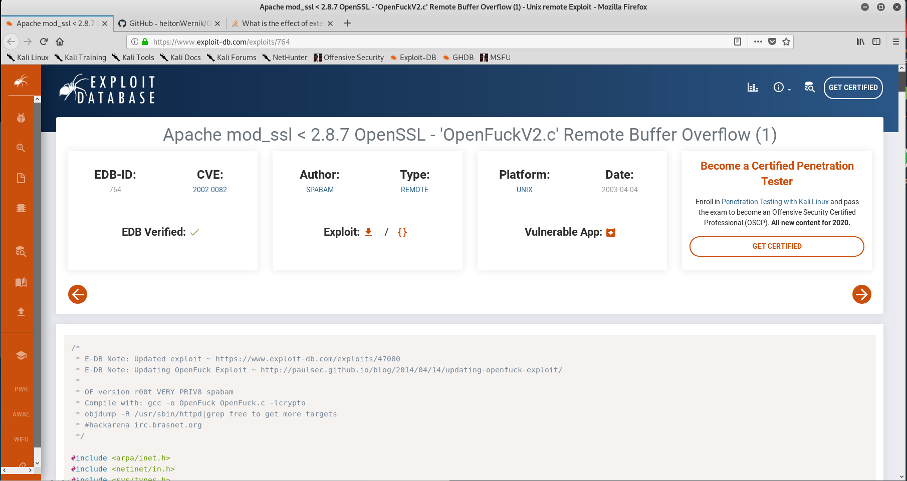

So for this section we're going to target the low hanging fruit and we will put this in order of how we would attack it. From juicy ones to less juicy ones.
80(apache) - 443(SMB) - mod_ssl 2.8.4 are more juicy than others (SSH and webalizer)
so we are going to google and saying mod_ssl 2.8.4 exploit
and we find out that there is a exploit called OpenFuck which is a remote buffer overflow exploit.
And we need to note the link to the vulnerabilities.

just like that.

Now we did research for apache 1.3.20 with the same way. So there is a site called cve. We can look at it.

we are searching red ones which is more critic vulnerabilities.
And as we can see in openssl, the same vulnerabilities openfuck is also a vulnerability for apache 1.3.20
if we do the same for samba 2.2.1a we will find these

so rapid7.com is important because they makes metasploit so we can note that site as well.

and some manual perl scripts rather than metasploit.
this is the google way to ressearch vulnerabilities and there is another way to do it with a tool called searchsploit. Every time you update the database in your linux machine, exploit database updated and downloaded into your machine as well. So when you have no internet access you can do with this way.
And the more spesific you are the worse off you are in searchsploit because this tool use exact string to search vulnerabilities.

and as we can see trans2open pop up. exploits/unix/remote/<file> means this is a exploit for unix and that is a remote code execution.